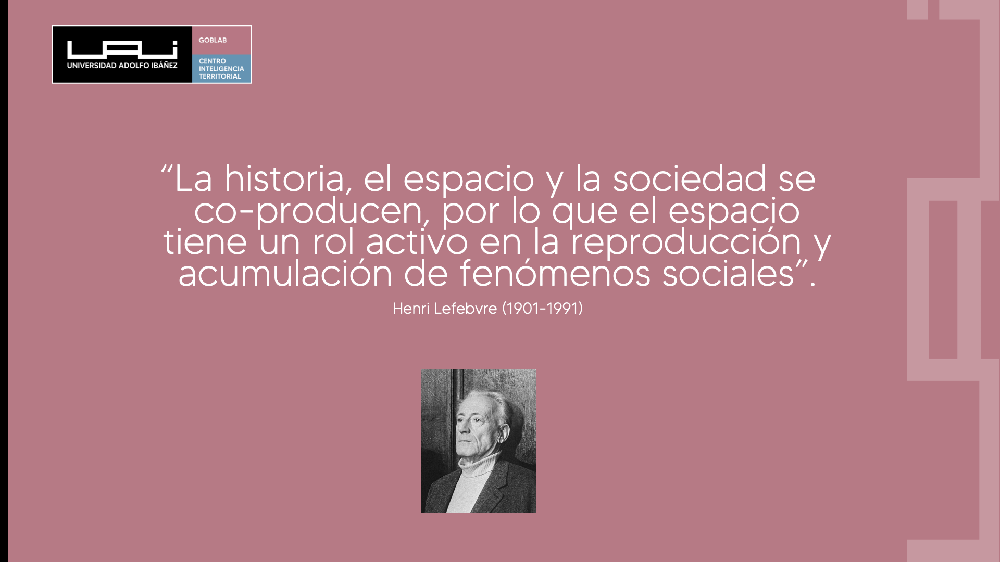

Introducción al Geoanálisis

El espacio no es neutro. Las decisiones que tomamos, como individuos y como sociedades, se distribuyen de manera desigual en el territorio. Las políticas públicas moldean y son moldeadas por esa realidad espacial. Comprender esta interacción entre datos, territorio y decisiones es la esencia del geoanálisis, una disciplina cada vez más relevante en un mundo interconectado.
Este capítulo ofrece una introducción al geoanálisis desde una perspectiva histórica, conceptual y aplicada, subrayando su valor para diseñar políticas públicas que mejoren la calidad de vida y el bienestar.
Breve Historia del Pensamiento Geográfico y Estadístico
El término estadística deriva del italiano statista (“hombre de Estado”), y desde la antigüedad ha servido para estimar capacidades de un reino y facilitar la gestión tributaria. Por ejemplo, en Egipto ya se realizaban censos hacia el 3050 a.C. Durante la expansión colonial europea (siglos XVI–XIX), la estadística se desarrolló en estrecha relación con la cartografía, como herramienta para administrar y dominar territorios.
En el siglo XX, con la llegada de la estadística espacial y la computación, se superaron las limitaciones del cálculo manual y se hizo posible analizar grandes volúmenes de datos georreferenciados. Hoy, gracias a R, QGIS y otras herramientas abiertas, el análisis espacial es accesible a todos.
El Espacio y el Tiempo: Coproducción Espacio-Temporal del Bienestar
El bienestar social es resultado de una coproducción espacio-temporal: las políticas, las acciones colectivas y las dinámicas naturales configuran el territorio, que a su vez influye en las oportunidades y limitaciones de sus habitantes.
Henri Lefebvre (1901–1991) lo expresó así:
“La historia, el espacio y la sociedad se co-producen, por lo que el espacio tiene un rol activo en la reproducción y acumulación de fenómenos sociales.”
El espacio no es simplemente un escenario pasivo, sino un actor en las dinámicas sociales. Por ejemplo, la segregación urbana o la concentración delictual en ciertas áreas no son casualidad, sino resultado de una autoproducción espacial donde factores históricos, económicos y sociales se retroalimentan.
Por Qué Medir: La Importancia de las Estadísticas Territoriales
Lo que no se mide, no se gestiona.
Las estadísticas territoriales permiten entender y actuar sobre el territorio con evidencia. Sin embargo, presentan desafíos particulares. La inferencia estadística clásica asume independencia entre observaciones y aleatoriedad, pero los datos espaciales violan ambos supuestos: • Las observaciones cercanas tienden a estar correlacionadas (Ley de Tobler). • El espacio actúa como un soporte material indispensable para las relaciones sociales.
Además, fenómenos como el MAUP (Modifiable Areal Unit Problem) advierten que los resultados pueden cambiar si modificamos las unidades territoriales de agregación.
Por eso, es clave aplicar técnicas robustas que cuantifiquen y corrijan la dependencia espacial en los datos.
El Geoanálisis Hoy: Herramientas y Capacidades para la Toma de Decisiones
El geoanálisis combina datos, teoría espacial y herramientas computacionales para explicar y predecir fenómenos territoriales. No se trata solo de mapear, sino de interpretar y modelar.
Las herramientas modernas —como R y sus paquetes especializados— permiten: • trabajar con datos vectoriales y raster, • calcular indicadores territoriales, • inferir patrones espaciales (mapas de calor, interpolaciones), • detectar autocorrelación y clusters espaciales, • y modelar relaciones (regresiones espaciales).
Impacto en las Políticas Públicas del Siglo XXI
Hoy, las políticas públicas más innovadoras incluyen una perspectiva territorial para abordar problemas como el cambio climático, la segregación socioeconómica, la delincuencia o la justicia ambiental.
Los indicadores territoriales son instrumentos esenciales para cuantificar y comparar condiciones, actividades o resultados en diferentes espacios y tiempos. Permiten definir puntos de comparación que guían la toma de decisiones.